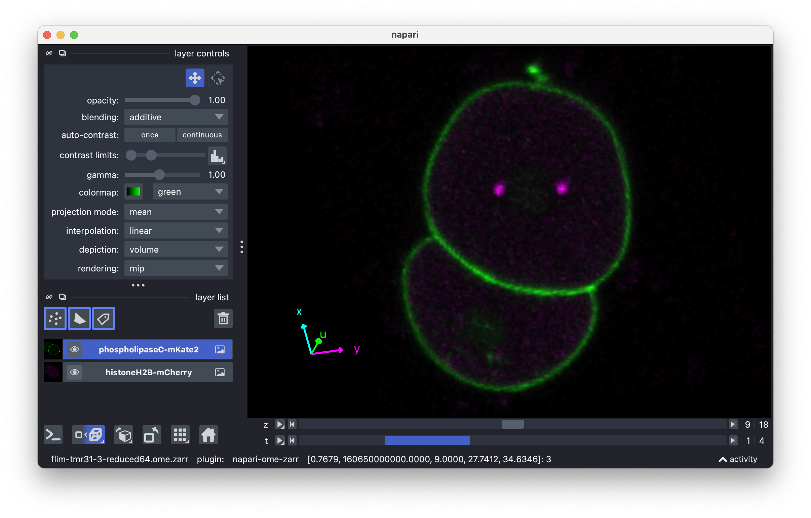
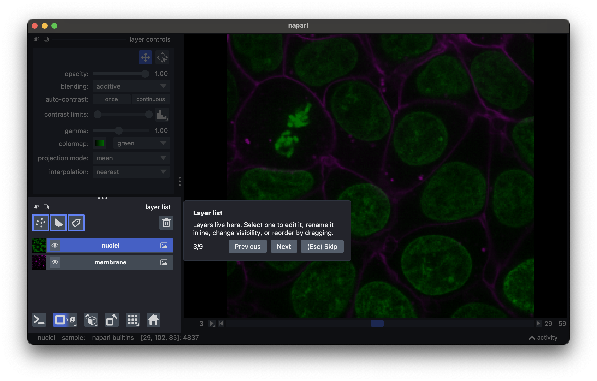

Release Notes#
Each section shows the highlights from recent releases. Click on the version links to view the complete release notes.
Last updated: November 23, 2026
Recent Releases (Last 3 Months)#
Latest features and improvements:
napari 0.10.1 (November 2026)
This is a maintenance-focused release: it has few new features, but contains a ton of performance and maintenance work that will enhance both working with napari and on napari! And of course, tons of bug fixes :)
CI speedups and improvements
Our automated testing and deploying machinery (CI) has accumulated slowness and technical debt over the years. During this release cycle, we tackled several of these issues (chief among them (#9870)) and cut test time on our pull request by up to half!
Various Performance enhancements
Labels painting, Shapes and slicing in general got several performance improvements. Many workflows will benefit from this, so make sure to try out things that used to be slow to check if you’re one of the lucky winners ;)
Typing progress
The napari codebase is getting more and move type annotation coverage! This release merged more than a dozen typing-related pull request, which helped (and will help) us find bugs and develop both napari and napari plugins more easily. We’ll continue this trend in the upcoming releases!
napari 0.10.0 (October 2026)
This release contains several new features and many enhancements and bugfixes. We also welcomed a ton of new contributors to the community!
Coordinate Grid with axes and ticks
This features has been requested for years, and we finally managed to get a version that we’re happy with! With #7827, you can now use viewer.scene.overlays.coordinate_grid to display a grid on your data, including unit-aware tick marks and axis labels! Try it out:
import napari
viewer = napari.Viewer(ndisplay=3)
layers = viewer.open_sample('napari', 'cells3d')
for layer in layers:
layer.units = 'nm'
layer.axis_labels = ['z', 'y', 'x']
viewer.scene.overlays.coordinate_grid.visible = True
Colorful names
Another long-requested feature: displaying layer names on the canvas now has colormap-aware colors (#9598)! This comes with some fancy machinery to ensure that colors are shifted enough to be always readable.
import napari
viewer = napari.Viewer()
layers = viewer.open_sample('napari', 'lily')
for layer in layers:
layer.name_overlay.visible = True
viewer.canvas.grid.enabled = True
viewer.canvas.grid.stride = 2
Cursor crosshair
Ever use the grid mode for your multichannel data but then struggle to know where you’re clicking? Struggle no more! You can now enable the new crosshair overlay (#8017) to always locate your exact position in every viewbox.
Default dock area and tabify for plugin dock widgets
Some plugin dock widgets are wider than they are tall, fitting poorly on the right-side dock and forcing users to manually move the widget to a different area every time on first launch. With #9526) and (#9707, you can now specify a default dock area and tabify behaviour for a dock widget contribution, which will prevent the need for this manual rearranging step:
widgets:
- command: example-plugin.my_widget
display_name: My wide widget
default_dock_area: bottom
tabify: True
Remove
PyQt5support, part 1 (#9650)
napari 0.9.2 (September 2026)
Vispy update
In #9499 we improved and updated Vispy (napari’s rendering engine), which brings us a few fixes and new features. Some important ones:
perspective rendering of points and text is no longer broken (Shift+right-click-drag to change FOV in 3D!)
RGB data can now be viewed in 3D. This might still have some kinks to smooth out, so if you see issues, make sure to report them on the issue tracker.
Type checking changes and guide
In #9395 we have switched our type checking from mypy to pyrefly because its much faster (>20x!), easier to understand, and well supported. Read our new typing guide for more information on typing the napari code base. Contributors have found typing contributions as a great introduction to contributing to napari and it is work that we welcome. To read more about Aniket’s experience, check out the new island dispatch blog post: From Any to Certainty.
New release policy with regular cadence
The napari team has been working hard to improve our release process, and based on our experience and feedback from the community, we have formally adopted a release policy (napari/docs#1126). Expect regular monthly releases and clearer communication about review and timing for contributions; read the full policy.
Releases from 3-6 Months Ago#
napari 0.9.0 (August 2026)
Auto-labelling of viewer axes
napari 0.5.0 laid the ground work for more accurate metadata handling by
allowing users and plugins to set the axis_labels on layers. napari 0.9.0
finally capitalises on that work by automatically labelling viewer axes based
on the axis labels of layers present in the viewer.
(#9282)
Now, opening a dataset with labelled axes will result in correctly labelled axes in the viewer:

Additionally, when you create a new layer from an existing one using the buttons in the GUI, the new layer now inherits the axis labels of the layer(s) it was derived from. (#9293)
There is still work to be done here. For example, if layers have labels that are inconsistent with each other, napari will simply ignore layers with fewer dimensions, or layers added later. But, for most use cases, layer and viewer metadata will now be much more informative!
Xarray metadata is now inherited
In the same vein, if you work with Xarray — common in climate,
geoscience, and many places where data ships with labelled coordinates — napari
now reads metadata straight from your DataArrays. When you add an xarray
object to the viewer, napari will use its dimension names as axis labels, infer
scale and translate from the coordinate values, and pick up units from
CF-convention units attributes on coordinates (#9316).
This closed an 8-year old, double-digit, nearly-as-old-as-napari-itself issue!
(#14)
Status bar coordinates as floats
Continuing on the theme of improved metadata, when scale and/or unit metadata is set on the layer, the status bar coordinates now have increased precision, where before they were limited to just integers. This means you can have more accurate physical estimates of your data coordinates when exploring data. (#9287)
Layer controls for multiple selected layers
Until now, layer controls only appeared when a single layer was selected. Now, napari dynamically builds the layer controls from your selection, so when you select several layers at once you can see and use the controls that are shared between them. Pan-zoom is always available, while the layer-specific buttons still appear only when a single layer is selected. (#9318)
There’s also an experimental setting, Generate GUI layer controls dynamically instead of using premade panels, that makes napari use the new dynamic controls even for single layers.
Take a guided tour of the viewer
New to napari, or just want a quick refresher on where everything lives? There’s now a guided tour, available from Help → Take a tour. The tour highlights the main areas of the viewer — the canvas, the layer list, layer controls, the viewer buttons, the dimension sliders, and the status bar — so you can get your bearings in seconds. If the viewer is empty, napari opens the built-in Balls (3D) sample data so the walkthrough has something to show (#9290).

Contributable plugin preferences
Plugins can now ship their own preferences (#9308)!
By declaring configurations in
their napari.yaml manifest, plugins get their own settings — stored
separately from napari’s own settings, automatically added to and editable from
the napari Preferences dialog, and accessible programmatically from Python:
from napari.settings import get_plugin_settings
settings = get_plugin_settings("my-plugin")
settings.reader.lazy = True
Read more in the Configurations Guide to learn more about how to add this new contribution to your own plugins.
Grid mode with hidden layers is much improved: empty grid spaces are never shown and stride operates on the full layer list, so layer grouping doesn’t change when you show or hide layers (#9244).
Fuzzy find in command palette
Have you used our command palette yet? It’s a great way to
quickly access and even discover napari functionality. Now, thanks to
#8661, it’s easier to find
functions when you don’t know the exact name, or you mistyped something. You’ll
need to have rapidfuzz installed to
make use of it. It’s automatically installed with napari[all] or
napari[optional]. And if the search feels a bit off, you can set just how
fuzzy you want it to be in Preferences > Experimental > Fuzzy Search Threshold.
2D slicing of surfaces
Ever since we added surfaces, they have been invisible in 2D slices. Now, thanks to all the work done on thick slicing, surface slices appear in 2D view (#8783). This enhancement is accompanied by support for async slicing, which should improve viewer responsiveness when slicing large, time varying surfaces, for example.
… And you can try this out yourself with common .obj surface files thanks to a new built-in reader plugin! (#9228)
You should now be able to drag and drop .obj files into napari and see them instantly.
Public API for auto contrast limits
For a very long time, it’s been possible to set automatic contrast limits
updating on a layer only through the graphical user interface. This means an
extra click for many workflows and poorer reproducibility. Thanks to
#9271, you can now set the
auto_contrast attribute on Image layers:
image_layer = viewer.add_image(..., auto_contrast=True)
# or
image_layer.auto_contrast = True
The life-changing magic of tidying up the Viewer model
The napari Viewer model, for historical reasons, is a grab-bag of many attributes, which makes usage, discoverability, and code modularity and composability a major issue. We’ve taken some big steps towards cleaning up one of our most important namespaces by creating Canvas (#8633) and Scene (#9323) models, which cleans up (#9363) and clarifies (napari/docs#1083) many parts of the API.
The old API is in extremely widespread use, so although it is silently deprecated, it will continue to work for the foreseeable future. In the meantime, the new API should be much friendlier to work with by carefully grouping related concepts and APIs. Some examples:
viewer.axesandviewer.floating_axesbecomeviewer.scene.overlays.axesandviewer.canvas.overlays.axes.From that API, you may also guess that the scale bar is on
viewer.canvas.overlays.scale_bar.You can even get a list of the current overlays (both visible and invisible) with
list(viewer.canvas.overlays)andlist(viewer.scene.overlays). (But do note that overlays with a_prefix are private and may change!)viewer.camerais nowviewer.scene.camera.Grid mode is now accessed at
viewer.canvas.grid(e.g.viewer.canvas.grid.enabled = True).
This has also enabled a new public API: you can now query the canvas size (in
pixels) without accessing private napari APIs! Check viewer.canvas.size!
The TL;DR:
# Canvas Model
viewer.scale_bar -> viewer.canvas.overlays.scale_bar
viewer.text_overlay -> viewer.canvas.overlays.text
viewer.floating_axes -> viewer.canvas.overlays.axes
viewer.grid -> viewer.canvas.grid
NOW EXPOSED -> viewer.canvas.overlays.current_slice
NEW -> viewer.canvas.overlay_tiling
NEW -> viewer.canvas.background_color & viewer.canvas.background_color_override
NEW -> viewer.canvas.size
# Scene Model
viewer.camera -> viewer.scene.camera
viewer.axes -> viewer.scene.overlays.axes
Removal of translation code
Several years ago, we started working on implementing localization machinery into napari. Unfortunately, this work has been sitting unfinished and unused, while making maintaining napari harder. Given the extra maintenance burden without benefit, we made the difficult decision to remove it from our codebase (#8935), with the hope that in the future we might restart this effort with a better plan.
We do aim to revisit when napari’s foundations are more solid, but for now,
napari.utils.translations is deprecated. If you have this code in your
codebase:
from napari.utils import translations as trans
please remove it. (For now, trans._() is a no-op.)
napari 0.8.0 (July 2026)
Dropping Python 3.10 and PyQt5
napari 0.8.0 drops support for Python 3.10 (#9104) and deprecates PyQt5 support (#9079).
These changes are being made to help maintenance of napari. Python 3.10 will reach end-of-life support in October 2026, while PyQt5 has already reached end-of-life, and is becoming increasingly difficult to maintain as a dependency. PyQt6, in contrast, has been the daily driver for the napari core team for many months. As we recognise that PyQt5 has extensive usage in the community, we have decided to deprecate it in this release and drop support in Q4 2026. If your project still depends on Qt5, consider migrating to PySide6 or PyQt6. As always, feel free to get in touch on our Zulip if you encounter any issues!
Histogram for Image layer
It’s been a heckuva long time coming, but napari Image layers finally gain a built-in histogram (#8391)! Wonder no more about why your image looks black or totally washed out — you can now see the distribution of your pixels’ brightness right there in the layer controls, or within the larger contrast limits widget (which, as a reminder, you can access by right clicking on the contrast limits slider).
You can access the brightness of the current slice (default), or the full layer, and it will sample progressively from remote chunks if you are looking at large remote data. Try it out!
Synced cameras between 2D and 3D views
Ever switched between 2D and 3D views to check out your data, only to be frustrated that the zoom and center has been reset? Now, by default, the cameras are synced between views (#9151)! The synced camera’s zoom and center persists when switching between 2D and 3D, with the depth (Z) component synced through the dimension slider to complete the round-trip.
To unlock the cameras from each other for completely separate views, you can
toggle viewer.camera.synced = False from the Camera popup (right-click 2D/3D
button) or Toggle Synced Camera (Ctrl/Cmd+U) in the View menu. Set your
preferred default in Preferences -> Application -> Synced Camera.
Auto-fill label contours when painting
Annotating blobs in 2D just got a lot faster! In paint mode, right-click to start a self-filling area annotation. Then draw your shape, and when you come back around to the start point, the shape will automatically fill with your selected label! (#9075) See it in action below:
We intend to keep refining this functionality, so if you like it but it doesn’t quite fit in your workflow, please get in touch!
Paint into more arrays faster!
Labels painting is now much faster for zarr arrays, and you can now paint into other array types such as dask and tensorstore! Painting with very large brush sizes (e.g. 1,000) is now possible where it used to be extremely choppy. Give it a whirl! (#8636)
Floating axes overlay
Ever feel disoriented looking at your data? You’re not alone. Until #8262, the axes overlay would live in the same space as your data, and would be out of view if you didn’t have the top left corner of your data on the canvas. Now you can have a little 2- or 3-axis compass always on in a corner of the canvas. Find it in the View menu!
Improving the napari theme
Like many things in community-run open source, napari’s theme grew organically
as we added features and UI elements.
#8927 unified the look of many of
those elements, while #9078
improved the default light and dark themes by increasing contrast to meet
Web Content Accessibility Guidelines. Want to build your own
WCAG-compliant theme? Try out the new WCAG table in
examples/theme_sample.py
(#9175)!
napari 0.7.1 (June 2026)
The napari 0.7.1 release includes many new features and improvements. Here are some of the highlights:
Signed Windows bundle
Starting with the napari 0.7.1 release, our bundle on Windows is now signed with a NumFOCUS certificate, like our macOS bundle has been. This means that you should be able to run napari without any warnings about the application being from an unknown publisher. This is an important step forward for our Windows users, as it enhances security and trust in our application, especially in managed IT environments where unsigned applications may be blocked by default.
The certificate is issued for the NumFOCUS foundation, which supports napari and a large number of other open source projects.
If you encounter any issues related to this change, please let us know!
Selection of the rendered level for multiscale layers
Prior to napari 0.7.1, when rendering a multiscale layer:
in 3D display, napari would always render the lowest resolution level of the pyramid
in 2D display, the pyramid level would be automatically selected based on the viewport
Thanks to #8917, users can now select a multiscale level to render (check out the awesome new example!). Importantly, this allows choosing a higher resolution rendering than before in 3D, as long as the selected level can fit within GPU texture limits. Meanwhile, for 2D display, you can fix the resolution level, which can be useful for annotation or previewing data prior to an analysis or export step. You can set this resolution using the resolution widget in the layer controls:
Colorbars for points layer
The points allows coloring points based of their feature values; in napari 0.7.1 we added support for colorbars (#8624), so you can now easily see the mapping between feature values and colors, just like the colorbars for image colormapping. This is especially useful when you have a large number of points and want to quickly understand the distribution of feature values.
Scalebar with units
In previous versions of napari, if you added a scale bar using View > Scale Bar > Scale Bar visible, it was shown with no units. In napari 0.7.1 we now
set default unit to pixel in #8900 and also add calculation of units for scale bar based on currently added layers in #8907 and #9007, if they have units set and are logically consistent across layers.
We’ve also added a guide about unit and scale aware rendering (#1032).
Lock layer to prevent accidental deletions
In #8736 we added the initial implementation for a lock mechanism for layers. Now, when a layer is locked, it cannot be accidentally deleted or destructively modified. This is especially useful when you have a complex project with many layers and want to prevent accidental changes to important layers. Note: the layer controls are not affected by the lock at this time. In the future we plan to expand this feature to prevent not only deletion but also other modifications.
Releases from 6-12 Months Ago#
napari 0.7.0 (March 2026)
Breaking Changes
Transition to npe2 plugin engine 🔌
In 0.6.0 we began the process of deprecating npe1 (napari-plugin-engine).
In all 0.6.x releases, npe1 plugins were automatically converted to npe2 by default,
and users could turn off the use_npe2_adaptor setting to continue using npe1 plugins
without auto-conversion.
In 0.7.0 this setting is being removed (PR #8448), and plugins will only continue to function if they can be auto-converted to npe2. Most plugins will be unaffected, but those that rely on import-time behaviour may not work as expected. If a plugin is relying on import-time behaviour, it may be able to replicate this using the new startup scripts functionality added in 0.6.5 (#8188).
If you encounter conversion issues in a plugin you rely on, please contact the plugin authors to encourage them to migrate their plugin to the npe2 system.
This change has been a long time coming, and it’s allowed us to remove thousands
of lines of tangled and confusing legacy code. Now that we have, it’s unleashed
the potential for massive improvements to file opening and saving in napari,
and exciting new features for our plugin infrastructure. Stay tuned!
For more details on this change and how it affects plugins, see the detailed guide. If you are a plugin author and your plugin is not yet npe2-compatible, please see our npe2 migration guide, and, if you encounter any issues, get in touch in our Plugins Zulip chat channel or by coming to one of our community meetings.
Negative axis labels? A real positive
If you’ve ever loaded data of mixed dimensionality in napari, like a TYX volume alongside a YX segmentation, you may have noticed the default axis labels didn’t quite line up:
axes |
0 |
1 |
2 |
|---|---|---|---|
volume |
0 |
1 |
2 |
segmt |
0 |
1 |
That’s because napari used 0-based indexing for its viewer axis labels, which breaks
down when layers have different numbers of dimensions. With
#8565,
viewer axis labels now use negative indexing by default, combining Python’s negative indexing
semantics with NumPy’s array broadcasting semantics. The last axis is always -1,
the second-to-last is always -2, and so on:
axes |
0 |
1 |
2 |
|---|---|---|---|
volume |
-3 |
-2 |
-1 |
segmt |
-2 |
-1 |
This means axis labels stay consistent as you add or remove layers of different
dimensionality – axis -1 is always your last axis. This also fixes
a long-standing bug where axis labels could end up duplicated when mixing layers of
different dimensionality (#6569).
You’ll notice this change in the dims slider labels, the axis overlay, and the dims
popup widget. If you already label your axes with your own names (e.g. z, y, x),
nothing’s changed. For everyone else, we have consistency at last!
What’s in an angle? The truth! Fixed camera angles 🎥
If you’ve ever set up the camera to take that perfect publication-worthy photo of
your data (and taken the time to query the camera angles), you may have noticed they seemed… off.
That’s because they were! Very… off. This was due to a long-standing bug in how we calculated our
camera angles, fueled in part by some arcane vispy axis-swapping tomfoolery, and in part by napari’s
starting position of viewer.camera.angles = (0, 0, 90).
Good news! With #8281, angles make sense again. The default camera angles are (0, 0, 0), and they
move intuitively – so viewer.camera.angles = (10, 0, 0) actually represents a 10 degree
rotation around the -3rd dimension. What a time to be alive!
Old versions of napari:
New and sane:
All rotations are now right-handed (counterclockwise when the axis points towards the viewer), with automatic sign-flipping for flipped camera views.
Now for the bad news… After many (and we do mean many) attempts, we realized we couldn’t provide legacy conversion functions to get you to and from the original camera angles. Therefore, this is a breaking change.
If you had scripts or notebooks setting up angles for screenshots, or if you’ve got workshop
materials or tutorials with preset angles, they’ll need to be updated. Any existing code
using viewer.camera.angles = (z, y, x) will now produce a different view than before.
Limiting self.events callbacks
In #8672, we changed how we emit events from
the parent self.events group.
Previously, connecting a callback to an EventedModel’s top-level event group
(e.g. model.events.connect(callback)) would cause that callback to fire multiple times
when a single assignment triggered multiple dependent fields. For example:
class MyModel(EventedModel):
a: int
@property
def b(self):
return self.a * 2
@b.setter
def b(self, value):
self.a = value // 2
model = MyModel(a=1)
model.events.connect(my_callback)
model.a = 4 # previously called my_callback twice (once for 'a', once for 'b')
# now calls my_callback once
The callback connected to model.events will now be called exactly once, with the event type
set to the first changed field and value set to its new value. Callbacks connected to specific
field events (e.g. model.events.a.connect(...)) are unaffected and continue to work as before.
If you connect to model.events directly and relied on receiving one call per dependent field
change, you will need to connect to the individual field events instead.
New features & widgets
What’s my metadata? Where’s my metadata? napari-metadata to the rescue
With a lot of work from our community contributor, Carlos Mario Rodriguez Reza
(carlosmariorr), and
our venerable community manager Tim Monko (timmonko),
napari now has a metadata viewing and editing plugin
included in our napari[all] installation and our bundle (PR #8576).

Open the Layer metadata widget from the Plugins menu and you can view File information, and view and edit Axes metadata such as
axis labels, translation and scale! You can also use the widget to copy specified metadata across to other layers.
Check out the README for some usage documentation, and feel free to open an issue to request new features – we’re actively improving this plugin so, more to come!
(Layer) Features galore
Prior to 0.7.0, our Features table widget only supported showing individual selected layer features.
With #8189, courtesy of Marcelo Zoccoler (zoccoler), the widget will display features of all selected layers! The layer’s name is displayed in an additional column, so you always know what you’re looking at, and you can choose to display only the shared feature columns across all layers. Pretty slick!
Smarter new layer buttons - inheriting from selected layers
Prior to 0.7.0, creating a new layer Points, Shapes or Labels layer would give you a layer with extent and dimensionality equal to the union of all currently open layers, and with none of the other spatial information (scale, units, etc.) inherited.
Now, with #8357 and #8702 you can create new Shapes, Points or Labels layer that inherits from a selected layer (or a combination of selected layers).
Shapes & Points
If you have one layer selected, your new Shapes or Points layer will copy
all spatial information from its ancestor, ready for annotating!
If you have multiple layers selected, only scale is copied.
If you wish to recover the original behavior, select all existing layers before creating your new layer. Deselecting all layers gives you a layer with only the number of dimensions inherited, and no other properties.
Labels
Labels layers inherit all spatial information when a single Image or Labels layer is selected.
When multiple Image or Labels layers are selected, or the selection includes any combination of
other layer types, the new Labels layer will span their extent – take note, this layer could be
huge!
The Labels button is disabled when layers are present in the viewer and none are selected.
(You can still create a (512 x 512) Labels layer when there are no layers present).
Visual cues
#8768 ensures this change is not invisible! When your selection will result in full inheritance of spatial information for the new layer, the new layer buttons will be highlighted. The highlight color will become dimmer when your selection will result in the new layer only inheriting the extent of your existing selection. If you’re lost in the inheritance madness, you can also hover over the buttons to get details about the behavior.
PS – You can now also create these new layers from the File -> New Layer menu!
Better text overlays 🔡
With #8236, we’ve not only refactored text overlays so they’re easier to implement, but we’ve also introduced two new long-requested overlays: the layer name overlay, and an overlay for the current slice. Together, they make generating publication-ready figures much easier!
Try it yourself:
import napari
v = napari.Viewer()
v.grid.enabled = True
ll = v.open_sample('napari', 'cells3d')
for l in ll:
l.name_overlay.visible = True
v.scale_bar.visible = True
v.scale_bar.gridded = True
v._overlays['current_slice'].visible = True
v._overlays['current_slice'].gridded = True
v.dims.axis_labels = ['z', 'y', 'x']
Note: the v._overlays attribute is still private as we’re working out the best API.
Rendering & display
More pixels to play with - texture tiling
Ever loaded a large 2D image in napari just to zoom in and feel like you’re not really getting a lot of bang for your pixel bucks? That’s because we were downsampling images that were too large to send the whole thing to the GPU.
Courtesy of Guillaume Witz (guiwitz), and his PR for texture tiling (PR #8395) 2D images that exceed OpenGL’s maximum texture size will be split into multiple tiles, each small enough to fit on the GPU.
Rendering layers in physical space - units matter!
In 0.6.6 and below, units were stored in metadata, but not used for rendering.
Adding two layers that represented the same physical space, but had different
units, e.g. a layer with scale=500, units='nm' and one with scale=0.5, units='μm'
wouldn’t overlap correctly, even though they should.
Thanks to #7889, layers with
compatible units (i.e. those that share the same physical dimension per axis,
like all spatial), will make use of units and scale to overlap correctly,
using the smallest unit as the rendering space.
Units can also be set globally on the layer list using viewer.layers.units = ('nm', 'nm'),
forcing layers to be rendered in this space. If a new layer is added with more dimensions
than the current layers, this global override is dropped with a warning.
Points - any size you like 🟣
On macOS, the points layer has never been able to reach its full potential, as OpenGL drivers limit the size of an individual marker to a certain number of screen pixels.
With #8552 and the release of vispy v0.16,
this long-standing issue has finally been resolved. Across all operating systems, you can
make your points as big as you want!
This change has also propagated to the zoom behaviour on macOS – points now zoom proportionally to the data, rather than staying the same size in screen pixels.
Here’s the behaviour pre 0.7.0:
And now:
Performance
Grid mode – bigger, better, faster 📈
If you’ve been playing with our new grid mode since 0.6.5, you may have stumbled into performance issues when progressively adding new layers to the viewer. Stumble no longer! Our grid mode is now wicked fast and buttery smooth 🧈.
We’ve also fixed some issues with mouse interactions and deleting layers, so you can tile to your heart’s content. Try it out:
import napari
viewer = napari.Viewer()
# enable grid with stride 2 to get layers split two-by-two
viewer.grid.enabled = True
viewer.grid.stride = 2
# set the scale bar to gridded mode so it appears in each grid box
viewer.scale_bar.visible = True
viewer.scale_bar.gridded = True
layers = viewer.open_sample('napari', 'lily')
# enable color bars
for layer in layers:
layer.colorbar.visible = True
Add & delete layers without delay
#8479 and #8443 made a number of improvements to our layer and overlay clean-up, addressing a number of issues with large numbers of layers in the viewer - adding them, deleting them, and even closing the viewer is now snappy and smooth!
Shapes layers – select, zoom, delete, repeat
If you’ve ever tried working with thousands of shapes in napari, you’ll know it could get… painful. Selecting 10,000 shapes with a box took over 50 seconds, deleting 5,000 shapes took over a minute, and zooming with shapes selected would lock up the viewer entirely. Not anymore!
0.7.0 brings a flurry of performance improvements:
Box selection now uses bounding boxes and vectorized intersection tests, delivering a more than 100x speedup (#8378). Selecting 10,000 shapes goes from >50s to ~0.3s.
Batch deletion replaces one-by-one removal for another 100x speedup (#8375)! Deleting 50,000 shapes now takes under half a second.
Outline computation is batched and cached, so zooming and panning with selected shapes no longer blocks (#8403, #8536).
Highlight updates are throttled for large layers, enabling smooth zoom even with 200,000+ shapes (#8404).
Mode switching no longer triggers unnecessary redraws, giving another ~3x speedup when many shapes are selected (#8551).
Beware: there’s still more to do, because drawing and drag-moving large selections remain slow!
Multiscale – less to update, more to celebrate
PR #8678 introduced a small change with a big effect! Now, zooming in (and panning while zoomed in), will only trigger a data refresh if the multiscale level has changed or if the new view falls outside of already loaded data.
Delete the launch codes – no more macOS hacks on launch
In 0.6.6 and below, we had some macOS specific launch code that skirted around some issues (which are now no longer relevant), and hackily “relaunched” napari to make sure the application name was correct.
This code added up to a whole second to our launch time, as well as being potentially problematic for some users. PR #8705 removed this code, making our start-up a little less hacky and a little more snappy. The downside is that when launching napari on macOS, the app name may be listed as Python, instead of napari. We think the trade-off is worth it.
Infrastructure & dependencies
A couple of notes on big changes in our dependencies:
With #8509 we improved our support for
pydantic v2, allowing us to enable support for Python 3.14! This brings us one step closer to fully adoptingpsygnalas our event library.In #8450 we dropped support for PySide2. If you were using napari with PySide for your Qt bindings, you’ll need to upgrade to PySide6. Good news is that PySide6 is looking pretty stable, while PySide2 had some compatibility issues with numpy2, and had to be built from source for Python 3.11+.
In (#8665) we updated the default qt binding to PyQt6. PyQt6 will now be installed with
napari[all]installations. Windows users should see improvements to their display with better support for fractional scaling!In #8338 we replaced
numpydocwithdocstring_parserfor parsing our docstrings. This will be a pretty invisible change from a user’s perspective, but it saves more than 50MB of disk space for a napari install!
Older Releases#
napari 0.6.6 (October 2025) - This a small bugfix release, following up the changes in 0.6.5.
napari 0.6.5 (October 2025) - This a sizeable release containing a few new exciting features and a lot of bugfixes.
napari 0.6.4 (August 2025) - ### Run scripts with napari from the command line
napari 0.6.3 (July 2025) - ### A Zoom with a View 🔍
napari 0.6.2 (July 2025) - ### The amazing new Grid mode! 🗺️
napari 0.6.1 (May 2025) - ### The HiLo👋 Colormap!
napari 0.6.0 (May 2025) - ### Summary
napari 0.5.6 (January 2025) - ### Faster shapes 🚀
napari 0.5.5 (December 2024) - This release continues the 0.5 tradition of churning out the bug fixes and enhancements, with 24 pull requests total in that category. If you are a…
napari 0.5.4 (September 2024) - Another release with a lot of bug fixes, but also some (more!) improvements to Shapes layer performance…
napari 0.5.3 (August 2024) - This is primarily a bug-fix release, including fixes for a couple of nasty regressions in 0.5.0 (#7184)…
napari 0.5.2 (August 2024) - This is primarily a bug-fix release, but we snuck a couple of new features in there, including smoother, prettier, better rendering of Labels volumes…
napari 0.5.1 (July 2024) - napari 0.5.1 is a bugfix release hot on the heels of napari 0.5.0. It fixes a critical bug with creating viewers
napari 0.5.0 (July 2024) - napari 0.5.0 is the beginning of an architectural overhaul of napari. The architecture improvements, which are still ongoing, enable more responsive
napari 0.4.19 - This release mostly contains a lot of bug fixes and performance improvements. But look out for 0.5.0, coming to a software repository near you — we…
napari 0.4.18 - - Drawing polygons in the Shapes layer can now be done much faster with the new lasso tool…
napari 0.4.17 - This release is focused on documentation improvements and bug fixes, with few changes to napari’s API. We picked out a few highlights, but keep…
napari 0.4.16 - - Added sphinx-gallery (#4288) - Add NAP process for major proposals (#4299)
napari 0.4.15 - This release is focused on documentation improvements and bug fixes, with few changes to napari’s API. The napari documentation is now entirely…
napari 0.4.14 - - Enable shapes layer (right click) > convert to labels (#3978) - Out-of-slice rendering for Vectors (#2902)
napari 0.4.13 - - Spherical Points (#3430) - Point selection in 3d (#3508)
napari 0.4.12 - This is a bug fix release with many minor improvements and bug fixes. The user experience for users of dask arrays might be significantly improved by…
napari 0.4.11 - This release introduces ways to interact with data in 3D (#3037). Features like label picking (#3074) and label painting/erasing (#3108) now work in…
napari 0.4.10 - This is a fairly small release, that follows on quickly from 0.4.9 to fix a regression in our ability to save layer data (fixed in #2876). It also…
napari 0.4.9 - This release adds a couple nice new features like additional shading modes for our surface layer (#2972) and the ability to copy a screenshot…
napari 0.4.8 - This release adds a new plugin type (i.e. a hook specification) for plugins to provide sample data (#2483). No more demos with
np.random! 🎉 We’ve…napari 0.4.7 - After nearly a year of planning, thanks to help from the fine folks at Quansight, napari now has a preferences dialog!
napari 0.4.6 - This release is the first that adds support for persistent settings in napari (#2212). Right now we just store the current theme and window geometry…
napari 0.4.5 - This release is our first release using Jupyter Book to build our documentation (#2187) which can be seen at https://napari.org/dev/, or
napari 0.4.4 - This release is a quick follow on from our
0.4.3release and contains some nice improvements to the GUI and analysis function hookspecs we…napari 0.4.3 - In this release we’ve added two new analysis and GUI focused [hook…
napari 0.4.2 - This is an emergency patch release to fix a regression in
0.4.1that broke magicgui generated dockwidgets which accepted layers as input (#1962)….napari 0.4.1 - This release follows our recent 0.4.0 release with a number of bug fixes and small improvements. We fixed a regression that caused the status bar to…
napari 0.4.0 - napari 0.4.0 is the culmination of months of improvements to our data models. It finally brings the data from all layers into a consistent, global…
napari 0.3.8 - This release is mainly a bug fix release, with a number of small improvements including around our contrast limits updates (#1622) and points…
napari 0.3.7 - With this release, we are launching an experimental standalone app (#1289). You can find it on our [GitHub releases
napari 0.3.6 - This release contains the long awaited addition of text to both the points and shapes layers (#1374). Checkout our
examples/*_with_text.pyfor…napari 0.3.5 - This release contains a number of bug fixes on various platforms. For those interested in napari performance, we have added a new performance…
napari 0.3.0 - ### Community and governance
napari 0.2.11 - - Point face color and edge color are now settable as a property in a columnar data table, mapped using a colormap (continuous values) or a color…
napari 0.2.9 - - better support for surface timeseries (#831) - contrast limits slider popup on right click (#837)
napari 0.2.7 - - Play button for animating axes now in the GUI - Threshold slider for much improved isosurface rendering